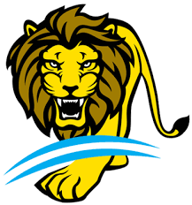

La Selección masculina de hockey sobre césped de Argentina, también conocida como Los Leones, representa a Argentina en las competiciones organizadas por la Federación Internacional de Hockey y la Federación Panamericana de Hockey.
Argentina es la principal potencia de hockey sobre césped en el continente americano ya que ha obtenido diez medallas de oro y cuatro de plata en los Juegos Panamericanos.
En 2014, la Selección logró por primera vez un histórico tercer puesto en el Campeonato Mundial disputado en La Haya, Países Bajos. En 2008, obtuvo también el tercer lugar en el Champions Trophy.
El 18 de agosto de 2016, Los Leones vencieron en el partido final a Bélgica por 4-2, consiguiendo la primera medalla de oro en un Juego Olímpico para el hockey sobre césped argentino en los Juegos Olímpicos de Río de Janeiro 2016.
El equipo compitió en todos los Campeonatos Mundiales, desde su primera edición en 1971, excepto en 1998, que fue realizado en la ciudad holandesa de Utrecht.
| Puesto | Paises | Continente | Puntos |
|---|---|---|---|
| 1 | Australia | Oceania | 3053,63 |
| 2 | Belgica | Europa | 2857,72 |
| 3 | Paises Bajos | Europa | 2846,53 |
| 4 | Alemania | Europa | 2623,30 |
| 5 | India | Asia | 2485,68 |
| 6 | Inglaterra | Europa | 2358,80 |
| 7 | Argentina | Panamericano | 2284.25 |
| 8 | España | Europa | 2120,35 |
| 9 | Nuea zelanda | Oceania | 1918,18 |
| 10 | Korea | Asia | 1853,02 |
Matías Rey (Buenos Aires, 1 de diciembre de 1984). Se formó en el Club San Fernando, con el que fue campeón metropolitano en 2003 y 2006.
Es hermano del también exjugador de hockey Lucas Rey.
Matías Rey se formó en las categorías inferiores del Club San Fernando. En 2000 comenzó a jugar en mayores en su club y en 2002, con 20 años, debutó en la selección nacional.
2005: integró la Selección juvenil argentina que fue campeona panamericana en Cuba y campeona mundial en Róterdam, primer título mundial de una Selección masculina de hockey.
2006: campeón metropolitano.
2007: campeón del Champions Challenge.
2014: medalla de bronce en el Campeonato Mundial.
2016: medalla de oro en los Juegos Olímpicos de Río de Janeiro 2016.
Federico Monja(12 de septiembre de 1993). Su posicion es de defensor.
Su equipo actual es el club Banco Provincia
Su debut con la Argentina fue en 2018
Paricipo en las FIH Pro League 2019-20, 2020-21, 2021-22. Y fue Campeón de la Copa Panamericana 2022
Nicolás Santiago Keenan (nacido el 6 de mayo de 1997)Juega como delantero para el club holandés Klein Zwitserland.
Keenan comenzó a jugar hockey para Ciudad de Buenos Aires en argentina. Jugó para Club Egara en España. Después de la Copa Mundial Junior 2016 se mudó a los Países Bajos para jugar Klein Zwitserland.
Keenan tuvo la oportunidad de representar a España, pero eligió para Argentina. Hizo su debut para el equipo nacional senior en el 2019 FIH Pro League.
En julio de 2019, fue seleccionado en el equipo argentino para los Juegos Panamericanos 2019. Ganaron la medalla de oro al derrotar a Canadá 5-2 en la final.
El 25 de junio de 2021, fue elegido para representar a Argentina en los Juegos Olímpicos de verano 2020.
Tomás Matias Santiago (nacido el 15 de junio de 1992). Juega como portero para club belga La Gantoise
Santiago comenzó a jugar en el club atletico de Cordoba y luego emigró a Buenos Aires y se unió a las filas de Mitre. En 2017 se mudó a Europa y comenzó a jugar para La Gantoise en Bélgica.
Representó a Argentina en el Copa Mundial de Hockey Masculino 2018. Y también fue portero de reserva en los Juegos Olímpicos de Río 2016, donde Argentina ganó la medalla de oro. También fue portero de reserva en los Juegos Panamericanos en Toronto 2015 y portero de reserva en los Juegos Panamericanos en Lima 2019
Thomas Ezequiel Habif (nacido el 27 de mayo de 1996). Jugó para GEBA en Argentina hasta los Juegos Olímpicos de verano 2020. Después de los Juegos Olímpicos se unió al club de la Bundesliga Harvestehuder THC en Hamburgo.
Sus hermanas Florencia y Agustina También han presentado a Argentina en hockey.
Maico Casella Schuth (nacido el 5 de junio de 1997). Comenzó a jugar hockey a los seis años en Argentina para San Fernando. En julio de 2019, firmó para HGC en los Países Bajos. Marcó 27 goles en dos temporadas para HGC y los dejó en 2021 para otro club holandés HC Tilburg, donde firmó por dos temporadas. En su primera temporada en Tilburg fueron relegados y no se quedó en Tilburg para su segunda temporada. El 8 de julio de 2022 se anunció que volvería a HGC.
Bautista Capurro(22 de octubre de 2003). Nacio en la ciudad Autonoma de Buenos Aires y empezo a interesaarse por el hockey a la edad de 4 años.
Su posion es la de delantero y Actualmente es el jugador con menor edad en el plantel del seleccionado mayor.
(7 de Julio de 1996). Juega actualmente para Jockey Club Rosario. sus posicones comunes son la volante y defensor.
Empezo a jugar a la corta edad de 7 años.
Sus patrocinadores son Mizuno y Balling.
Nicolás Cicileo (Buenos Aires, 1 de octubre de 1993) Se desempeña tanto de defensa como de volante, en el Club Ciudad de Buenos Aires.
En 2014 fue convocado por primera vez a la selección mayor de Argentina que disputó el Champions Trophy en India.